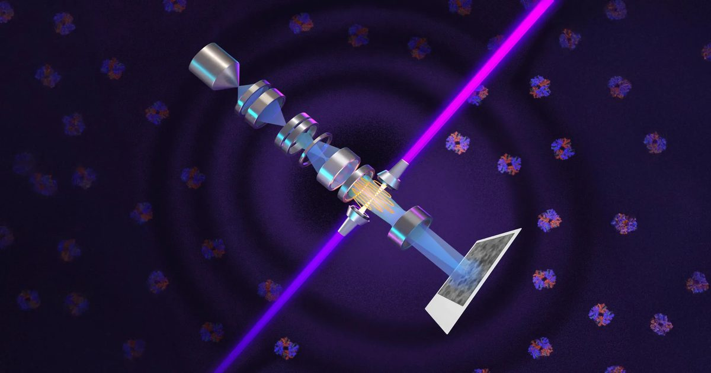

Революционно новый микроскоп может раскрыть скрытый механизм жизни
Исследователи разработали революционный микроскоп, который использует невероятно мощный лазер, чтобы сделать ранее невидимые клеточные структуры легче увидеть.
Технология значительно улучшает четкость изображения, позволяя ученым исследовать небольшие белки, которые обычные электронные микроскопы изо всех сил пытаются захватить.
Это может в конечном итоге показать, как крошечные молекулярные машины взаимодействуют внутри клеток, обеспечивая беспрецедентный взгляд на скрытую работу